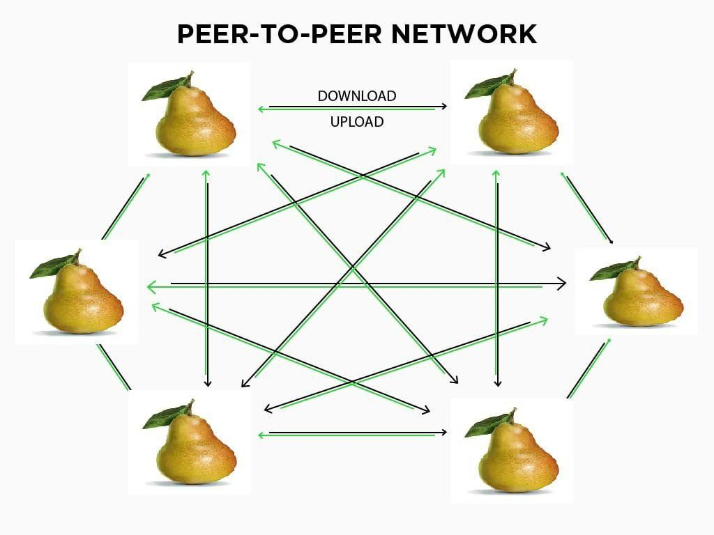

An Introduction to
Peer-To-Peer Networking
by Meghraj Goswami
Scan to access slides
What is P2P?
Peer to Peer networking is a decentralized network architecture where each peer can provide and consume resources to and from other peers in the network, without the need for a central server.
Peer? Why I hardly know 'er!
Peers are the members of the network, they serve as both a client and a server, and can share data and resources with other peers in the network.
Difference from traditional network architectures
In a Client-Server model, data and resources are stored on a central server which is accessed by clients.
P2P eliminates the need for a central server and relies on direct peer connections.
Pros
- Decentralized: No single point of failure
- Scalable: New peers add to data or resource pool
- Fault Tolerant: Redundancy via multiple peers
- High Performance: Reduced congestion and load
- Low Cost: Expensive server infra not needed
- Privacy: Traffic routed through multiple nodes
- Community: Foster collaboration and engagement
Cons
- Security: Malicious peers, botnets, limited control
- Legality: Illegal sharing of copyrighted materials
- Latency: Peers/routing can be slow
- General QoS: File availability, bandwidth
- Complexity: Harder to setup and maintain
How does it work?
When a system joins a P2P network, it needs to discover other peers in the network.
Some common methods of peer discovery are:
- Centralized Trackers
- Decentralized hash Tables (DHTs)
- Peer exchange (PeX)
- Seed Nodes
- Broadcast / Multicast
Centralized Servers/Trackers
Trackers are servers that keeps track of peers in the network.
DHT's
Decentralized data structures that store information about peers in the network.
A peer can query the DHT to find other peers and associated resources in the network.
Can efficiently handle large scale P2P networks.
Bootstrap Nodes
Used in blockchain based networks (BTC, ETH).
Predefined seed nodes that are known to be online and are used by new peers to join the network.
A peer can query the bootstrap node to find other peers in the network.
PeX
Peer exchange allows peers to exchange peer lists with each other.
Enables clients to expand their peer list obtained from a tracker or DHT by exchanging peers with other clients.
Resource Sharing
Peers can share resources in the form of file chunks, data or processing power.
Each chunk is identified and verified by a cryptographic hash to ensure data integrity.
Seeding
Once a peer has the file, it can continue to share (seed) the file with other peers in the network. This is good moral practice and is central to P2P networks.
P2P based technologies
- Direct Connect (DC++)
- Napster, Soulseek
- Torrents
- IPFS
- Briar / Jami
- Perfect Dark
- I2P
Direct Connect
DC is a file sharing protocol. Clients connect to a servers called "hubs" using software like EiskaltDC++ and are able to search for and directly download files from other clients.
Napster

Napster was a P2P application used for sharing sharing digital music.
Lawsuits were filed against it regarding copyright infringement.
IPFS
Inter-Planatary File System is a P2P network for storing and sharing data.
IPFS uses content-addressing, ie, storing and fetching data based on the fingerprint of the actual content rather than name or location.
Torrent Protocol
BitTorrent protocol is used for distributing data over the internet using torrent clients.
Seeders are clients who have downloaded chunks and are actively sharing files for other clients, the peers, to download.
Briar

Encrypted messaging service built on P2P, ie, it doesn't have a server for storing messages.
Apart from Internet (Tor network) it can use BT, WiFI, physical memory to transfer messages.
Perfect Dark
Japanese P2P anonymous file-sharing application based on the DKT+DHT+DU protocol.
It utilizes a proprietary distributed data store network called Unity.
Invisible Internet Project (I2P)
Privacy focused anonymous overlay network for secure, private communication without censorship.
Created as an alternative to traditional, open Internet.